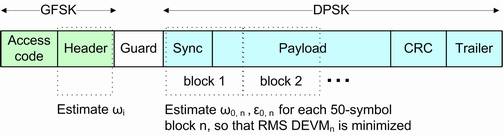

The number of DEVM trace points depends on the packet type and the payload length. These parameters determine the number N of 50-symbol blocks that the R&S CMW processes for the modulation analysis.

The following table gives an overview.
2-DHx packets | 3-DHx packets | |
|---|---|---|
Number of EDR synchronization sequence bits (used for modulation analysis) | 20 | 30 |
EDR payload header (in bits) | 16 | 16 |
Payload length (in bits) | 8*n (where n is payload length setting in bytes) | 8*n (where n is payload length setting in bytes) |
Cyclic redundancy check (CRC) bits | 16 | 16 |
Trailer (in bits) | 4 | 6 |
Total number of bits used for EDR modulation analysis | 56+8*n | 68+8*n |
Number of bits per symbol | 2 | 3 |
Number N of blocks processed for EDR modulation analysis | floor [(56 + 8*n)/(2*50)] | floor [(68 + 8*n)/(3*50)] |
The displayed DEVM values include 132 zeros, corresponding to 126 GFSK symbols, 5 guard period symbols, and 1 Sref symbol. Thus, the number of DEVM values is 132 + 50*N.